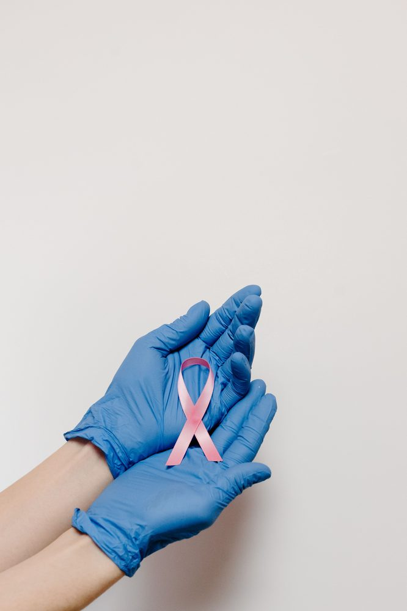

Лечение рака в Турции
Организация доступа к медицинской онкологии и лучевой терапии, второе мнение и индивидуальный план лечения.
Готовы начать? Поговорите со специалистом уже сегодня.
Связаться с нами
Мы организуем доступ к медицинской онкологии (химиотерапия, иммунотерапия, таргетная терапия) и лучевой терапии в ведущих больничных сетях Турции, чтобы вы могли получить квалифицированное второе мнение и понятный план лечения, не разбираясь в системе в одиночку.
Центры лучевой терапии и онкологии
Мы работаем с онкологическими центрами Acıbadem Healthcare Group — в Стамбуле (Маслак, Алтунизаде, Аташехир, Атакент) и за его пределами — в Бурсе, Кайсери, Адане, Измире (Kent), Бодруме и Эскишехире.
Доступные технологии лучевой терапии различаются в зависимости от больницы и подтверждаются для вашего конкретного случая при изучении медицинской документации.
Как формируется стоимость
Лечение рака не может иметь единую фиксированную цену для всех — она зависит от диагноза, стадии и плана лечения, рекомендованного вашим онкологом. После изучения вашей медицинской документации нашей командой вы получаете индивидуальный план лечения и расчёт стоимости, прежде чем решить, ехать ли в Турцию.
На этой странице мы не публикуем показатели излечения, гарантии успеха или обещания конкретного результата — результаты лечения зависят от вашего индивидуального диагноза. Наша роль — помочь вам получить доступ к нужным специалистам, скоординировать ваше лечение и поддержать получение второго мнения.
Почему стоит выбрать Турцию?
- Больницы с международной аккредитацией
- Опытные узкопрофильные хирурги и медицинские команды
- Значительная экономия по сравнению с Великобританией, ЕС и США
- Прямые рейсы из большинства крупных городов Европы и Ближнего Востока
Зачем работать с независимым консультантом?
В отличие от клиники, продвигающей собственные услуги, Artun Healthcare Consultancy работает независимо и в ваших интересах. Под руководством Tahsin Güney — с 35-летним опытом в сфере медицинского страхования и частных больниц Турции, включая руководящие должности в Турецком учреждении социального обеспечения (SGK) и Acıbadem Healthcare Group — мы подбираем для вас подходящую больницу и специалиста, а не направляем вас в интересах одной-единственной клиники.
Ваш путь лечения
- 1Изучение медицинской документации и второе мнение
- 2План лечения и стоимость
- 3Прибытие и консультация
- 4Лечение
- 5Последующее наблюдение
Часто задаваемые вопросы
Можете ли вы назвать фиксированную цену моего лечения?
Нет — стоимость лечения рака зависит от диагноза, стадии и плана лечения. Мы предоставляем индивидуальный расчёт стоимости после изучения вашей медицинской документации.
Что вам нужно от меня, чтобы начать?
Ваша имеющаяся медицинская документация, патологоанатомическое заключение, а также любые снимки и записи о предыдущем лечении, чтобы наши медицинские партнёры могли дать вам обоснованное второе мнение.
С какими больницами вы работаете?
Мы сотрудничаем с онкологическими центрами Acıbadem Healthcare Group в Стамбуле и нескольких других городах Турции.
Гарантируете ли вы результаты лечения?
Нет. Мы никогда не обещаем показатели излечения или конкретные результаты. Наша роль — помочь вам получить доступ к нужным специалистам и организовать второе мнение и план лечения.
Запросите второе мнение
Отправьте нам свою медицинскую документацию, и наша команда поможет вам получить квалифицированное второе мнение и индивидуальный план лечения.
Связаться с нами